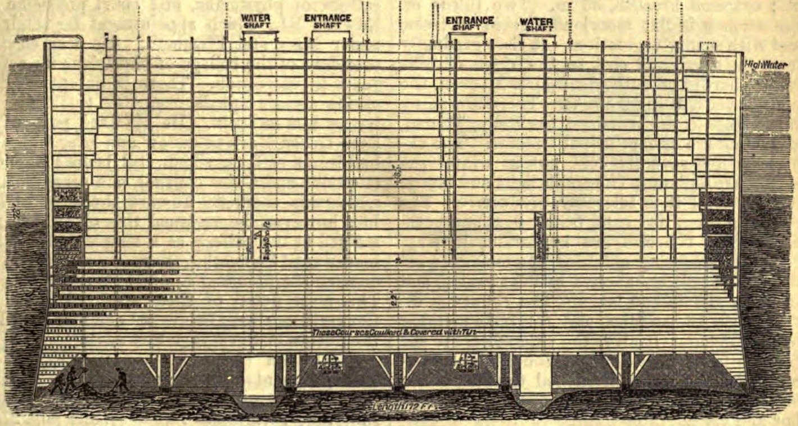

Sperm whales can dive to 3,000 feet multiple times a day, and stay at depth for about 40 minutes. Photo Credit: Gabriel Barathieu, Oregon State University.
Sperm whales can dive to 3,000 feet multiple times a day, and stay at depth for about 40 minutes. Photo Credit: Gabriel Barathieu, Oregon State University.The Brooklyn Bridge is an engineering marvel. At the time it was completed in 1883, it was the world’s longest suspension bridge, stretching almost a mile between Brooklyn and Manhattan and dwarfing the tallest of New York’s skyscrapers. But for the workers who labored beneath the East River to create its foundation, the Brooklyn Bridge was a living hell. Many of the laborers suffered health problems, including flu-like symptoms, aches that sometimes grew into excruciating pains, paralysis, brain damage, heart attacks and even death. All together, these symptoms came to be known as a disease called “the bends.”
The bends, which we now call Decompression Sickness, or DCS, occurs when people breathe air that is changing pressure. It might not seem like it, but at sea level, the air we all breathe has the entire weight of Earth’s atmosphere pushing down on it. Because of this, the air pressure at sea level is appropriately denoted “1 atmosphere.” But water is much denser than air. When a person breathes air in just 33 feet of water, both the person’s body and the air they are breathing are under 2 atmospheres of pressure. If this person rapidly returns to sea level, they get bent. Today, SCUBA divers are the most likely people to suffer from DCS.
SCUBA (or Self-Contained Underwater Breathing Apparatus) is a system used by marine biologists to enable scientific work under water. SCUBA divers breathe pressurized air that is primarily composed of nitrogen and oxygen, and the degree of pressurization depends on how deep the diver is underwater. At depth, oxygen is utilized by the body, but nitrogen dissolves into a diver’s tissues. As the diver approaches the surface, the reduction in pressure causes nitrogen to bubble out of his or her tissues. During a controlled, slow ascent, the nitrogen can safely exit the body through the lungs. But during fast ascents, bubbles can get trapped inside the body’s tissues, causing joint pain, rashes, and even paralysis and death.
To avoid DCS, SCUBA divers are careful to ascend slowly, and to remain at the surface long enough between dives to allow all the dissolved nitrogen to safely bubble out of their systems.
The men who built the Brooklyn Bridge were not SCUBA diving, but like SCUBA divers, they were working underwater and breathing air that was changing pressure.
The bridge is supported by two towers, which are rooted deep beneath the river’s surface. Before the towers could soar into the sky and support pedestrians and vehicles, the towers’ foundations had to be constructed. Two giant wooden boxes, called caissons, were built to form the base of each tower. Construction workers dropped the caissons down to the bottom of the river and pumped them full of pressurized air to force the water out.
 This architectural drawing of a Brooklyn Bridge caisson depicts the entrance shafts where workers transitioned from breathing air at 1 atmosphere to breathing air at 3-4 atmospheres. The human figures in the bottom left-hand corner indicate where the workers labored.
Workers were sent down into the caissons to dig them deeper and deeper into the muddy river bottom. There, they breathed air that was pressurized to 3 or 4 atmospheres.
Frank Harris, a fifteen-year-old Irish immigrant who labored in the caissons in 1871, wrote about the experience:
“The six of us were working naked to the waist in a small iron chamber with a temperature of about 80 degrees Fahrenheit: in five minutes the sweat was pouring from us, and all the while we were standing in icy water that was only kept from rising by the terrific air pressure.”
After digging for hours, the workers returned to the surface, and the air they were breathing rapidly changed from 3 to 4 atmospheres of pressure to just 1. Nitrogen bubbled into the workers’ tissues, causing severe cases of the bends. Harris himself witnessed a man who “fell down and writhed about, knocking his face on the floor till the blood spurted from his nose and mouth.”
Today, the causes of the bends are well understood, and precautions are taken by SCUBA divers and other underwater workers to avoid the disease. But marine mammals like seals, sea lions, dolphins and whales make numerous, long, deep dives seemingly without any physical repercussions. Why don’t these animals get bent?
The ocean is home to some of the world’s most talented air-breathing divers. Sea otters can dive up to 180 feet for 4-5 minutes, seals can dive up to 820 feet for half an hour, and toothed whales can dive to a depth of 7,300 feet for an hour. Moreover, many of these animals can make series of deep dives with no apparent physical consequences. How do they do it?
Sperm whales can dive to 3,000 feet multiple times a day, and stay at depth for about 40 minutes. Photo Credit: Gabriel Barathieu, Oregon State University.
First and foremost, all marine mammals hold their breath when they dive. This means that they do not breathe air that is changing pressure. While breath-holding, human divers have reached depths of over 200m and ascended quickly without suffering DCS.
Marine mammals also have numerous special adaptations* that prevent them from getting DCS by limiting the amount of nitrogen that accumulates in their tissues while diving. Whales, for example, have a suite of tricks that allow them to reduce the amount of nitrogen their bodies absorb during a dive. First, whales have far more oxygen-binding proteins in their blood than humans do. This allows them to actually exhale before diving, and rely almost entirely on the hemoglobin and myoglobin in their blood and muscles for oxygen during the dive. Then, whales collapse their lungs as they descend, forcing any remaining air up into the reinforced airways that lead to the lungs and away from the alveoli, the structures inside the lungs that exchange gasses with the rest of the body. Both of these adaptations limit the amount of nitrogen that could enter whales’ tissues and cause the bends.
Modern underwater workers must follow careful protocols and limit the length and frequency of their dives to avoid the bends. Perhaps soon, new technologies and techniques will be inspired by nature's experts, the marine mammals. After all, they have had hundreds of thousands of years of evolution to perfect the art of deep diving.
*PDF available upon request.
How Stuff Works. What causes 'the bends'? at http://adventure.howstuffworks.com/outdoor-activities/water-sports/question101.htm
Eyewittness to History. "Sandhog: Building the Brooklyn Bridge, 1871." (2005) at http://www.eyewitnesstohistory.com/brooklynbridge.htm
McNamara, R. The Brooklyn Bridge was a Fascinating Sight while Being Built. at http://history1800s.about.com/od/bridgebuilding/ig/Images-of-the-Brooklyn-Bridge/Brooklyn-Bridge-s-Caisson.htm#step-heading
James, C. et al. Cyclopedia Of Architecture, Carpentry And Building. (2007). Brunauer Press. at http://chestofbooks.com/architecture/Cyclopedia-Carpentry-Building-4-6/222-Pneumatic-Caissons.html
Freedive-Earth. AIDA freediving World Records. at http://www.freedive-earth.com/aida-freediving-world-records
Kooyman, G.L. Respiratory adaptations in marine mammals. (1973). American Zoologist 13:457-468.
Poganis, P.J. Diving Mammals. (2011). Comprehensive Physiology 1:517:535.
Ray, C.C. Q&A Safe Diving for Whales. (1994) at http://www.nytimes.com/1994/06/14/science/q-a-392340.html